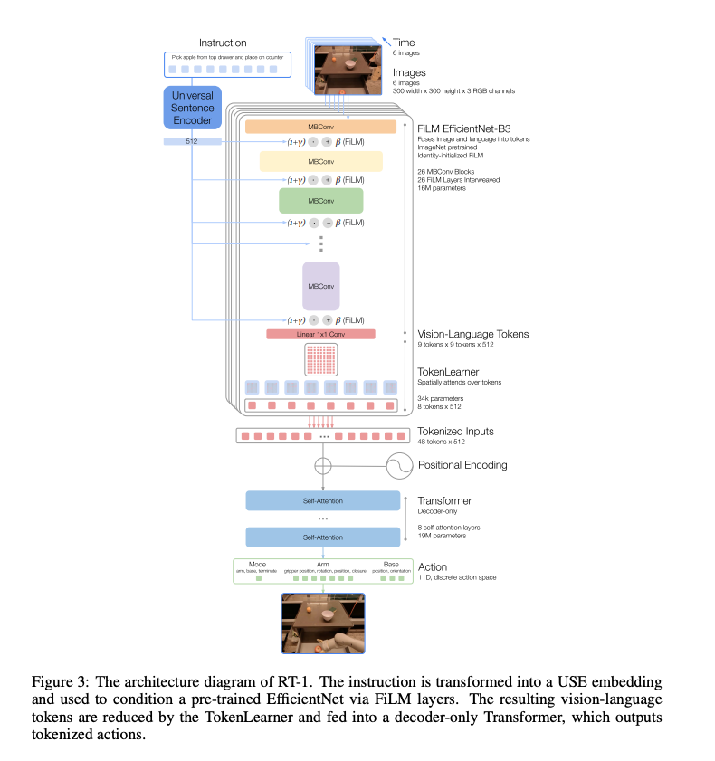

通用智能体与机器人Transformer：Gato和RT-1技术解析及与LLM Transformer的异同¶
本文分析DeepMind和Google两项具有里程碑意义的工作：“通用智能体”（Gato）和“RT-1（机器人Transformer 1）”。这两项研究均代表着通用人工智能的重大进展，尤其体现在它们将Transformer架构应用于多模态和机器人领域。
我会阐明它们的核心动机、技术原理和具体的实现细节。最后，报告将进行全面比较，阐述机器人Transformer与大型语言模型Transformer之间的根本区别，重点关注它们的架构异同、输入/输出模态、训练数据特性以及各自领域面临的独特挑战。
1. 引言：通用人工智能与机器人的追求¶
1.1. 基础模型与通用智能体范式转变¶
近年来，人工智能领域经历了深刻的变革，其主要驱动力源于大型语言模型（LLMs）如GPT系列所取得的显著进展。这些模型的出现从根本上重塑了人工智能研究的重心，使其从开发特定任务模型转向构建多功能“基础模型”和“通用智能体”。这种转变凸显了对“单一大脑”式智能体的偏好，即能够无缝整合多种复杂服务的系统，这一概念与神经科学的见解不谋而合。
在数据量、模型参数和计算资源规模的共同作用下，结合Transformer架构，能够催生出传统任务特定模型无法比拟的涌现能力和泛化性能。这种因果关系促使研究人员将LLMs的成功经验应用于多模态感知和机器人控制等复杂领域，将它们视为广义的“序列建模”问题。
1.2. Gato和RT-1在通用智能体愿景中的定位¶
通用智能体被期望具备管理多样化任务的泛化能力，并在现实世界的挑战中展现出强大的交互性和适应性。然而，创建此类智能体面临着严峻挑战，包括灾难性遗忘、可扩展性问题和样本效率低下等。
DeepMind的Gato和Google/DeepMind的RT-1直接应对了这些挑战，它们分别将基础模型范式扩展到多模态和机器人控制领域。这两个项目都致力于吸收海量且多样化的数据集，以学习通用模式，从而减少对昂贵且任务特定数据收集的需求。
2. Gato¶
2.1. 动机与愿景：迈向多模态通用智能体¶
Gato的核心动机是受大规模语言模型进展的启发，旨在构建一个超越纯文本输出的单一通用智能体。其愿景是创建一个“单一大脑”的智能体，能够无缝整合各种服务，就像用户倾向于向ChatGPT寻求多种任务协助一样。
从这个角度看，一个理想的通用智能体应具备管理多样化任务的泛化能力，并在现实世界的挑战中展现出强大的交互性和适应性。
“单一大脑”通用智能体的概念不仅仅是一个雄心壮志，更是Gato设计的核心假设。这表明，一个单一的、统一的认知架构，而非一系列专门化的模块，能够有效地处理跨越不同模态和具身化形式的广泛任务。这种推论是，如果一个单一模型能够使用“相同的网络和相同的权重”来表示和处理来自不同来源的信息（文本、图像、机器人状态）并生成多样化的输出（语言、电机指令），那么这暗示了智能在这些领域中表现出的根本共性。这种更广泛的意义在于，它标志着人工智能从模块化方法向更整体、统一方法的转变，其中通用智能可能从对单一强大架构进行足够规模和多样化的预训练中涌现。
2.2. 技术原理与架构¶

- 多模态、多任务、多具身策略： Gato被设计为一个单一的神经网络，使用相同的权重，能够与不同具身形式在广泛环境中进行交互。它在604个不同的任务上进行了训练，这些任务涵盖了各种模态、观测和动作规范。
- 多样化数据序列化为扁平化Token序列： 实现这种多模态能力的一个基本技术原理是将所有多样化数据（来自不同任务和模态）序列化为扁平化的Token序列。这包括图像、文本、本体感受、关节扭矩和按钮按压等信息。这种统一的Token表示方式使得Gato能够像标准的大型语言模型处理文本一样，对整个异构数据集进行训练和采样。
将“所有数据序列化为扁平化的Token序列”是Gato核心技术创新，它将所有形式的信息（视觉、语言、本体感受、动作指令）视为Transformer可以处理的统一“语言”。这种因果关系在于，通过将不同类型的数据转换为一致的Token格式，Transformer（其本质设计用于序列处理和理解序列内关系）可以学习一种超越特定模态的通用策略。这使得单一模型能够根据混合输入流生成与上下文相关的输出（文本、关节扭矩、按钮按压）。这种更广泛的意义是，最初的“语言模型”范式正在演变为更通用的“序列模型”范式，其中“语言”是一个通用的Token流，代表了智能体环境中任何可观测或可操作的信息，从而为真正的多模态通用智能体铺平了道路。
- Transformer网络作为核心架构： Gato采用了一个Transformer神经网络，具体是一个1.2B参数的decoder-only transformer模型。该架构包含24层，嵌入大小为2048，以及一个后注意力前馈隐藏层大小为8196。
2.3. 实现细节与训练范式¶
A. 多模态Token化方案： 尽管将原始数据转换为Token的方法理论上是无限的，但Gato采用了一种经过经验验证的特定Token化方案，该方案在其当前规模和硬件条件下表现最佳。例如，图像Token和智能体观测当前并未被Gato预测，它们对损失的贡献被屏蔽。这表明模型专注于预测动作和文本，而不是重建观测。
1、 模态特定的 Tokenizer (Modality-Specific Tokenizers)
1 | |
（1）文本 (Text)**：
1 | |
（2）图像 (Images)：
图像处理通常采用 ViT-based VQ-VAE 的方式。
ViT (Vision Transformer)：图像首先被分割成一系列非重叠的图像块 (patches)。
VQ-VAE (Vector Quantized Variational AutoEncoder)：每个图像块通过 VQ-VAE 编码器被压缩成一个离散的代码（即 Token）。VQ-VAE 的作用是将连续的图像数据映射到有限的离散码本中的一个索引。这使得图像可以被表示为一系列离散的图像 Token，就像文本的单词 Token 一样。这些图像 Token 通常按光栅顺序（raster order，即从左到右，从上到下）排列。
（3）连续值 (Continuous Values)：
对于像关节扭矩、机器人姿态、传感器读数等连续值，Gato 采用一种称为 μ-law 编码 (mu-law encoding) 的技术将其离散化。
μ-law 编码是一种非线性量化方法，它在小值范围提供更高的分辨率，在大值范围提供较低的分辨率，更符合感知特性。
经过 μ-law 编码后，连续值被映射到一个预设范围内的整数值，然后这些整数被视为离散 Token。
例如，原始论文提到使用 1024 个 bin（桶）来离散化连续值，并对结果整数进行偏移，以避免与文本 Token 的 ID 发生冲突。
（4）离散值 (Discrete Values)：
例如按钮按下、离散的状态变量等，这些本身就是离散的，可以直接映射到唯一的 Token ID。通常会按照某种规范的顺序（如行主序 row-major order）进行序列化。
3、 序列构建与上下文 (Sequence Construction and Context)
- 所有这些 Token（来自不同模态）被拼接成一个单一的扁平序列。
- 对于决策任务（如玩游戏或机器人控制），整个“回合”（episode）的数据，包括历史观测、动作和奖励，都会被序列化为一个长 Token 序列。
- Gato 模型（一个 Transformer）会看到这个完整的序列作为上下文，并预测序列中的下一个 Token。这种自回归 (autoregressive) 的预测方式与大型语言模型（如 GPT-3）预测下一个词的方式非常相似。
- Gato 模型通常会维持一个固定大小的上下文窗口（例如 1024 个 Token），只关注最近的历史。
4、 损失函数与屏蔽 (Loss Function and Masking)
- 自回归预测 (Autoregressive Prediction)：Gato 的训练目标是预测序列中的下一个 Token。这意味着对于序列中的每个 Token，模型都会尝试预测它。
- 损失屏蔽 (Loss Masking)：尽管所有数据都被 Token 化并输入到模型中，但并不是所有 Token 都参与损失的计算。
- 预测目标 (Prediction Targets)：Gato 主要关注预测动作 Token (action tokens) 和文本 Token (text tokens)。这意味着在计算模型的损失时，只有这些 Token 的预测误差会计入总损失。
- 被屏蔽的 Token (Masked Tokens)：正如您所提到的，图像 Token (image tokens) 和智能体观测中非动作/非文本部分 (non-action/non-text agent observations) 对损失的贡献被屏蔽 (masked out)。这意味着：
- 模型仍然会处理这些观测 Token，它们会作为上下文信息帮助模型理解当前状态。
- 但是，模型不会被强制去精确重建或预测这些图像 Token 或非动作观测 Token。它们的预测误差不会影响模型的权重更新。
- 技术实现：这通常通过在损失计算时，将这些非目标 Token 对应的损失项乘以 0 来实现。或者，将这些非目标 Token 的目标标签设置为一个特殊值，并在损失函数中忽略这个特殊值。
- 目的 (Purpose)：
- 聚焦核心任务：这种损失屏蔽方案使得模型能够集中其学习资源来预测对决策或交互最关键的元素——即智能体的动作和生成文本。
- 避免冗余学习：重建图像或详细的非动作观测可能是一个非常复杂且计算成本高昂的任务，而对于许多决策任务来说，精确地重建像素信息可能并不是最重要的。通过屏蔽这些损失，Gato 可以避免在不必要的重建任务上浪费模型容量和训练时间，从而更有效地学习与行为和语言相关的模式。
- 提高效率和性能：在当前规模和硬件条件下，这种聚焦策略有助于提高模型的训练效率和在核心任务上的表现。它允许模型在保持多模态能力的同时，优化其在代理控制和语言生成方面的性能。
B. 离线监督训练： Gato以纯粹的监督方式进行离线训练**。然而，论文指出，原则上，Gato也可以通过离线或在线强化学习进行训练。
- 离线监督学习 (Offline Supervised Learning)
这是 Gato 当前主要采用的训练方式。
- 定义：模型在预先收集好的、固定的数据集上进行训练，这个数据集包含了大量的各种任务的输入-输出对。训练过程是“离线”的，意味着模型在训练期间不会与环境进行实时交互，也不会收集新的数据。
- 数据来源：
- 人类示范数据 (Human Demonstrations)：例如，人类玩家玩游戏的录像、人类控制机器人的轨迹数据、人工标注的图像-文本对、人类对话记录等。
- 已有的数据集：大规模的图像数据集（如 ImageNet）、文本数据集（如 Common Crawl）、以及各种任务的公开数据集。
- Gato 的具体实践：Gato 汇集了 DeepMind 内部大量的多任务数据
所有这些数据都被统一 Token 化为序列，作为监督学习的输入-输出对。
- 训练目标：模型被训练来预测给定输入序列的下一个 Token。这本质上是一个自回归 (autoregressive) 预测任务，类似于大型语言模型 (LLM) 预测下一个词。通过最小化预测 Token 和真实 Token 之间的交叉熵损失来更新模型参数。
- 优点：
- 训练稳定性好：由于数据是固定的，训练过程通常更稳定，更容易收敛。
- 安全性高：不需要在真实环境中进行试错，避免了潜在的危险或高成本的交互。
- 可扩展性强：可以轻松利用大规模计算资源对大规模数据集进行训练。
-
缺点：模型只能模仿训练数据中的行为模式，无法自主探索或发现比训练数据更好的策略。
-
离线强化学习 (Offline Reinforcement Learning, Offline RL)
-
定义：与监督学习一样，模型也是在预先收集的、固定的数据集上进行训练。但这个数据集包含了智能体与环境交互的经验轨迹（状态、动作、奖励），并且训练目标不再是简单的模仿，而是从这些经验中学习一个能最大化未来累积奖励的策略。
- 数据来源：
- 日志数据 (Logged Data)：通常是过去（由人类、其他 RL agent或随机策略）与环境交互时记录下来的轨迹数据。这些数据可能包含次优的、多样化的行为。
- 训练目标：
- 模仿学习 (Imitation Learning)：在某些形式的离线 RL 中，会结合模仿学习的思想，即通过自回归预测序列中的动作来学习。
模仿学习旨在让智能体通过观察“专家”（通常是人类）的示范行为来学习完成特定任务的策略。
核心思想：不同于强化学习需要通过试错并根据奖励信号来学习，模仿学习的核心在于直接从专家的行为数据中提取信息，然后尝试复制或泛化这些行为。简单来说，就是“照葫芦画瓢”。
为什么需要模仿学习？
在许多实际场景中，设计一个合适的奖励函数来指导强化学习过程是非常困难甚至不可能的。例如，在机器人操作复杂物体、自动驾驶、或执行精细动作等任务中，很难用简单的数值奖励来精确定义“好”与“坏”的行为。而人类往往可以直接演示这些任务，模仿学习就能利用这些人类专家的宝贵经验。
模仿学习通常可以分为两大类：
-
行为克隆 (Behavior Cloning, BC)
- 原理： 这是最直接、最基础的模仿学习方法。它将模仿学习问题转化为一个监督学习问题。
-
过程：
- 数据收集： 专家（例如人类）在执行任务时，记录一系列的“state-action pair”数据。例如，对于自动驾驶，记录车辆在某个路况（状态）下，司机采取的转向、油门、刹车（动作）。
- 模型训练： 训练一个神经网络，以状态为输入，以专家在对应状态下采取的动作为输出标签。模型学习一个从状态到动作的映射函数，即策略 \(\pi(s) \rightarrow a\)。
- 部署： 训练好的模型在新的环境中接收到状态观测时，会输出它预测的动作。
-
优点： 可以利用成熟的监督学习技术。
-
缺点（复合误差问题 - Compounding Errors / Distribution Shift）：
- 行为克隆假设训练数据能够覆盖智能体在执行任务时可能遇到的所有状态。
- 然而，一旦学习到的策略与专家策略略有偏差，智能体就可能进入训练数据中从未出现过的“新状态”。在这种新状态下，模型可能会做出错误的动作，导致下一个状态进一步偏离专家轨迹，从而错误累积，最终导致任务失败。
- 这就像学开车，你只看了专家在平直路段的驾驶录像，一旦遇到弯道，你可能就会犯错，然后越错越远。
- 改进方法 (DAgger - Dataset Aggregation)： 为了缓解复合误差问题，DAgger 算法在训练过程中引入了迭代式的专家反馈。在每一轮中，智能体使用当前策略在环境中执行，如果遇到训练数据中没有的状态，就请求专家提供正确的动作，然后将这些新的“状态-动作对”添加到训练集中，并重新训练模型。
-
逆强化学习 (Inverse Reinforcement Learning, IRL)
- 原理： 与行为克隆直接模仿动作不同，IRL 不直接学习策略，而是尝试推断专家行为背后的奖励函数。它假设专家是“最优”的，即专家采取的行动是为了最大化某个（未知的）奖励函数。
- 过程：
- 观察专家行为： 智能体观察专家的状态-动作轨迹。
- 推断奖励函数： IRL 算法的目标是找到一个奖励函数 \(R(s, a)\)，使得专家观察到的行为在该奖励函数下是（近似）最优的。这是一个比直接学习策略更困难的问题，因为一个行为可能由多个奖励函数导致。
- 学习策略： 一旦推断出奖励函数，就可以使用标准的强化学习算法（例如 Q-learning 或策略梯度）在该奖励函数下训练一个智能体，使其学会最大化这个奖励函数从而执行任务。
- 优点：
- 泛化能力强： 如果能正确推断出奖励函数，智能体可以在与示范环境略有不同的环境中，或面对新情况时，依然能做出合理的决策，因为它理解了专家的“意图”或“目标”。
- 克服复合误差： 由于学习的是奖励函数而非直接的行为映射，即使智能体偏离了专家轨迹，它也可以根据奖励函数重新找到最优路径。
- 缺点： 相比行为克隆，IRL 算法通常更复杂，计算成本更高，且推断奖励函数本身就是一个难题。
- 典型算法： 最大熵逆强化学习 (Maximum Entropy IRL)、生成对抗模仿学习 (Generative Adversarial Imitation Learning, GAIL)。GAIL 结合了生成对抗网络 (GAN) 的思想，通过一个判别器来区分智能体轨迹和专家轨迹，从而学习一个能够匹配专家行为分布的策略，这在某种程度上可以看作是学习奖励函数的一种隐式方式。
Gato 在其离线监督学习的训练范式中，其核心就是行为克隆的一种高级形式。它将所有多模态数据都 Token 化为序列，然后训练一个 Transformer 模型来预测下一个 Token，这包括预测下一个动作 Token。通过这种方式，Gato 从海量的多任务专家示范数据中学习，模仿了各种任务的专家行为。
尽管 Gato 当前主要采用行为克隆，但其序列建模的架构使其具备了结合其他模仿学习（如基于序列的 IRL 或 GAIL）以及更广义的强化学习的潜力。例如，在 IRL 框架下，Gato 可以被训练来预测能够带来高奖励的未来序列，而不仅仅是专家执行过的动作。这体现了其设计上的通用性和灵活性。
-
在线强化学习 (Online Reinforcement Learning, Online RL)
-
定义：模型在与环境进行实时交互的过程中进行学习。智能体执行动作，观察环境的响应（新的状态、奖励），然后根据这些新的经验更新其策略。这个过程是循环往复的。
- 数据来源：智能体通过自身的实时交互生成数据。
- 训练目标：最大化长期累积奖励。智能体通过试错 (trial-and-error) 的方式探索环境，发现最优的行动策略。
- Gato 的序列建模视角：
- Gato 可以被视为一个策略网络 (policy network)。在在线 RL 设置下，模型会接收当前的观测序列（Token），并预测下一个动作 Token。
- 根据预测的动作，智能体在环境中执行，获得奖励和新的观测。
- 然后，利用这些新的经验（状态-动作-奖励序列），通过强化学习算法（如 Q-learning, Policy Gradients, Actor-Critic 等）来更新 Gato 模型的参数。
- 更新可能涉及对整个序列进行处理，并根据序列的奖励进行反向传播。
C. 上下文窗口机制与自回归采样： 在部署过程中，Gato通过Token化提示（例如，演示）来形成初始序列。当环境提供新的观测时，它们也被Token化并附加到该序列中。 Gato随后以自回归方式逐个Token采样动作向量，直到完整的动作向量形成并发送到环境中。模型维护一个1024个Token的固定上下文窗口，确保它始终能够访问该窗口内的所有先前观测和动作。这种自回归性质与LLMs生成文本的方式直接并行。
3. Google/DeepMind的“RT-1 (Robotics Transformer 1)”¶
3.1. 动机与愿景：扩展机器人泛化能力¶
- 机器人领域的挑战： 与计算机视觉或自然语言处理不同，机器人领域在收集真实世界数据方面面临独特挑战，这使得模型的泛化能力尤为关键。传统的端到端机器人学习通常涉及收集狭隘、任务特定的数据。
- 借鉴基础模型的成功经验： RT-1的动机是借鉴现代机器学习模型（它们利用大规模、多样化、任务无关的数据集实现零样本或少样本性能）的成功经验，将其转移到机器人领域。
- 成功的关键： 作者认为，成功的关键在于开放式、任务无关的训练，结合能够吸收多样化机器人数据的高容量架构。这使得模型能够“吸收”经验并学习适用于单个任务的通用模式，从而提高效率。
3.2. 技术架构与输入/输出处理¶
- 基于Transformer的机器人控制模型： RT-1（机器人Transformer 1）是一种基于Transformer的新型架构，专门为大规模真实世界机器人控制而设计。它接收一系列图像和自然语言任务描述作为输入，并输出机器人每一步需要执行的动作。该模型通过将高维输入（摄像机图像、指令）和输出（电机指令）编码为紧凑的Token表示供Transformer使用，从而实现高效的运行时推理，以进行实时控制。
动作Token化：离散化处理
机器人的动作被分解为多个维度，以实现精细控制。这包括：
手臂运动： 7个变量，涵盖了三维位置 (x, y, z)、三维姿态 (roll, pitch, yaw) 以及夹持器的开合状态 。
底座运动： 3个变量，包括二维位置 (x, y) 和一个偏航角 (yaw) 。
模式切换： 一个额外的离散变量，用于在三种模式之间切换：控制手臂、控制底座或终止任务 。
每个动作维度都被离散化为256个bin 。目标值被映射到这些均匀分布的bin中的一个 。这种每维度离散化的动作表示允许模型捕获复杂的多模态分布，这比标准连续高斯分布只能捕获单一模式有显著改进，从而提升了动作的精确性和多样性 。
表1: RT-1 动作空间离散化详情
| 动作类型 | 维度数量 | 具体维度 | 离散化Bins数量 |
|---|---|---|---|
| 手臂运动 | 7 | x, y, z, roll, pitch, yaw, 夹持器开合 | 256 |
| 底座运动 | 3 | x, y, yaw | 256 |
| 模式切换 | 1 | 控制手臂, 控制底座, 终止任务 | 3 (离散变量) |
-
输入处理流程：
(1) 视觉特征： 图像首先通过ImageNet预训练的卷积神经网络（EfficientNet）进行处理。该EfficientNet通过FiLM（Feature-wise Linear Modulation）层，根据预训练的自然语言指令嵌入进行条件化，以提取与任务相关的视觉特征。EfficientNet 的输出是一系列高维的特征图（feature maps），这些特征图包含了图像的丰富语义和空间信息，但通常具有较高的维度和冗余性。例如，一个 \(H \times W \times C\) 的特征图，如果直接展平，会产生大量的特征向量。
FiLM (Feature-wise Linear Modulation) 是一种非常强大且通用的神经网络条件化方法，它允许一个神经网络的计算过程根据另一个输入（条件信息）进行动态调整。这在多模态任务中特别有用，比如在 RT-1 中，它能让图像特征的提取过程被自然语言指令所“引导”。
FiLM 的核心思想是，它通过一个简单的特征维度上的仿射变换（affine transformation）来调制（modulate）神经网络中间层的激活值。这个仿射变换的参数（缩放因子 \(\gamma\) 和偏移量 \(\beta\)）是由另一个独立的网络（称为 FiLM 生成器，FiLM Generator）根据条件信息动态生成的。
用数学公式表示，如果 \(H\) 是某个神经网络层（例如卷积层或全连接层）的输出激活值，那么经过 FiLM 层调制后的输出 \(H'\) 为：
其中：
- \(H\) 是输入到 FiLM 层的特征图或激活值。
- \(\odot\) 表示逐元素乘法 (element-wise multiplication)，也称为 Hadamard 乘积。
- \(\gamma\)（gamma）是缩放因子 (scaling factor)。
- \(\beta\)（beta）是偏移量 (bias / shifting factor)。
关键在于：
- \(\gamma\) 和 \(\beta\) 不是可学习的固定参数（像传统神经网络层中的权重那样），它们是由 FiLM 生成器根据条件信息动态计算出来的。
- \(\gamma\) 和 \(\beta\) 的维度与 \(H\) 的特征维度（即通道数）匹配，并且对每个特征通道独立应用。这就是“Feature-wise”的含义。
FiLM 生成器 (FiLM Generator)
FiLM 的另一个关键部分是FiLM 生成器。这是一个独立的神经网络，它接收条件信息作为输入，然后输出对应每个特征通道的 \(\gamma\) 和 \(\beta\) 值。
例如，在 RT-1 中：
- 条件信息： 自然语言指令（例如，经过编码器处理后的语言嵌入向量）。
- FiLM 生成器： 一个小型神经网络（通常是几层全连接层），它将语言嵌入向量作为输入。
- 输出： 生成器输出两个向量，一个用于 \(\gamma\)，一个用于 \(\beta\)。这两个向量的维度与被调制的目标网络层的特征通道数相同。
FiLM 如何影响神经网络计算
FiLM 通过动态地缩放和偏移特征激活值，赋予模型强大的条件化能力：
-
动态调整特征表示： 语言指令（或任何其他条件信息）可以通过 \(\gamma\) 和 \(\beta\) 来动态地调整图像特征的表示。
-
例如，如果指令是“抓取红色方块”，FiLM 层可能会学习到提高与“红色”特征相关的通道的激活值（通过大的 \(\gamma\)），并抑制与背景或不相关颜色相关的通道的激活值（通过小的 \(\gamma\) 甚至负的 \(\gamma\)，如果后面跟着 ReLU 激活，这能有效地“关闭”某些通道）。
-
\(\beta\) 则可以用来调整特征的基线或激活阈值。
-
实现跨模态交互： FiLM 使得视觉骨干网络（例如 EfficientNet）的计算能够被文本指令所“引导”。这意味着图像特征的提取不再是静态的，而是根据当前任务和指令进行自适应的调整。
-
细粒度控制： 由于 \(\gamma\) 和 \(\beta\) 是逐特征（逐通道）计算的，FiLM 提供了对神经网络内部特征表示的细粒度控制。这比简单地将条件信息拼接（concatenation）到输入特征中更强大，因为它可以直接修改特征的语义含义。
-
提高泛化能力： 通过条件化，模型可以更好地泛化到新的任务或场景。例如，如果模型学习了如何根据颜色指令处理图像，它就可以在看到新颜色物体时，通过调整 \(\gamma\) 和 \(\beta\) 来适应。
FiLM 层的原理是：通过一个辅助网络（FiLM 生成器）根据外部条件信息动态生成缩放因子 \(\gamma\) 和偏移量 \(\beta\)，然后将这些参数逐特征地应用到目标神经网络层的激活值上，从而实现对目标网络计算过程的动态调制。 这使得模型能够根据条件信息自适应地处理和理解数据，极大地增强了神经网络在多模态和条件生成任务中的灵活性和性能。
- Token学习器模块： 在图像和文本处理之后，RT-1架构的一个关键组件是Token学习器模块。该模块负责从处理过的视觉特征中计算出一组紧凑的Token，然后将其输入到Transformer中。这一步骤对于效率至关重要，因为Transformer网络（尽管容量大）需要保持相对较小（仅接收48个Token作为输入），以确保快速推理和对人类用户的响应能力。这表明它专注于为Transformer提供高度压缩的相关信息。
- Transformer核心： RT-1的核心是一个仅解码器Transformer网络。该Transformer对Token学习器生成的紧凑Token集进行注意力处理，以生成离散的动作Token。动作是高度细粒度的，包括：
- 七个用于手臂运动的维度（x、y、z、滚转、俯仰、偏航、夹持器开合）。
- 三个用于底座运动的维度（x、y、偏航）。
- 一个额外的离散维度，用于在三种操作模式之间切换：控制手臂、控制底座或终止回合。
-
闭环控制机制： RT-1以闭环控制方式运行，以3赫兹的频率发出动作指令，直到发出“终止”动作或达到预设的时间步数。尽管其拥有3500万参数，但由于其高效的架构，实现了这种实时控制。
RT-1架构的一个关键特点是，与Gato更统一的Token化方法不同，它在主Transformer之前使用了专门的预处理模块，如带有FiLM层的ImageNet预训练EfficientNet和Token学习器。这表明，对于机器人技术而言，原始像素数据可能维度过高或噪声过大，以至于纯Transformer难以高效处理， 尤其是在实时约束下。这种因果关系在于，这些专门模块充当智能特征提取器和降维器，将最显著的视觉和语言信息提炼成紧凑的Token表示（48个Token），然后由随后的Transformer进行有效推理以生成动作。这更广泛的意义是，对于真实世界的机器人技术，从原始像素到动作的纯“端到端”Transformer可能尚未达到最佳或可行状态； 采用混合架构，利用特定领域的感知组件，可以显著提高效率和性能，弥合高层推理和低层控制之间的鸿沟。
3.3. 数据收集策略与泛化能力¶
| 特征 | 描述 | 来源 |
|---|---|---|
| 机器人数量 | 13台 Everyday Robots (EDR) 移动机械臂车队 | Everyday Robots (EDR) |
| 数据收集时长 | 17个月 | EDR 机器人课堂 (办公室厨房环境) |
| Episode数量 | 约13万个 | 人类远程遥操作演示 |
| 任务数量 | 超过700个，涵盖多种高层技能和对象，如抓取、放置、开关抽屉等 | - |
| 数据来源多样性 | 混合了EDR真实世界数据和Kuka机械臂的抓取数据 (1:2比例)；可吸收模拟数据 | EDR, Kuka (QT-Opt项目), 模拟环境 |
| 数据标注 | 每个Episode均有文本指令描述 | - |
- 真实世界机器人数据集的规模与多样性： RT-1成功的基石是其大规模的真实世界机器人数据集。该数据集是在17个月内使用13台机器人收集的，包含约13万个回合，涵盖700多个不同的任务。
- 数据多样性对泛化的重要性： 指令列表和技能（例如，抓取、放置、开关抽屉、取物品、操作细长物体和打开罐子）的设计旨在测试对新指令的泛化能力以及执行多种技能的能力。数据集的广度和规模对于泛化至关重要，使模型能够发现结构相似任务之间的模式，并通过组合这些模式来执行新任务。增加数据规模和多样性可以提高模型的泛化能力。
- 可扩展性： 该系统易于扩展，允许持续提供更多样化的数据以提高其能力，因为在添加新指令时没有对特定技能做出任何假设。
-
异构数据源的整合： RT-1展现了从不同领域（如模拟或甚至不同类型的机器人，例如Kuka机器人用于垃圾分类，而RT-1主要使用Everyday Robots）有效吸收数据的卓越灵活性。至关重要的是，这种整合在保持原有任务性能的同时，提高了对新场景的泛化能力。
虽然RT-1的13万个回合数据集在机器人领域已经相当庞大，但研究材料中反复强调的“多样性”与规模并重，这是一个关键的发现。其潜在趋势是，对于物理世界交互而言，仅仅积累更多数据点（数量）的效果不如确保这些数据点涵盖广泛的任务、物体、环境乃至机器人形态（多样性）。这种因果关系在于，多样化的数据迫使模型学习更抽象、可迁移的表示和技能，而非仅仅记忆特定的轨迹或任务实例。RT-1能够泛化到未见任务、干扰物和背景，并整合来自不同机器人或模拟的数据而性能不下降，正是这一点的例证。这更广泛的意义在于，机器人数据收集策略必须优先考虑广度和可变性，积极寻找新颖的场景和条件，以在复杂、连续的物理世界中实现鲁棒的泛化，这与互联网规模文本数据相对更容易的可扩展性形成对比。
3.4. 性能与鲁棒性¶
| 评估类别 | RT-1成功率 | Gato成功率 | BC-Z成功率 | BC-Z XL成功率 | RT-1相对优势 |
|---|---|---|---|---|---|
| 已知任务 | 97% | 65% | 72% | - | 显著领先 |
| 未见任务 | 76% | - | - | - | 比次优基线高24% |
| 干扰物鲁棒性 | 83% | - | - | - | 比次优基线高36% |
| 背景鲁棒性 | 59% | - | - | - | 比次优基线高18% |
| 长时程任务 (Kitchen1) | 67% | 33% | 53% | - | 显著领先 |
| 长时程任务 (Kitchen2) | 67% | 0% | 13% | - | 显著领先 |
| Kuka数据融合 (垃圾桶拣选) | 39% (EDR+Kuka) | - | 22% (仅EDR) | - | 接近翻倍 |
- 对已知任务的高性能： RT-1在700多个训练指令上实现了97%的成功率。
- 对未知任务的显著泛化： RT-1展现了强大的泛化能力，在从未见过的指令上执行成功率为76%，比次优基线高出24%。这表明它能够推断并应用学习到的模式到新场景中。
- 对环境变化的鲁棒性： 该模型对环境变化也表现出显著的鲁棒性。在涉及干扰物的任务中成功率为83%，比次优基线高出36%；在新的背景下任务成功率为59%，比次优基线高出18%。这包括在其他模型失败的全新厨房环境中保持性能。
- 长时序任务： RT-1的性能使其能够在SayCan等框架内执行非常长的时序任务，最多可达50个阶段。
-
与基线的比较： 与Gato、BC-Z和BC-Z XL（BC-Z的更大版本）等模仿学习基线相比，RT-1在各项测试中均显示出明显的改进。虽然Gato是一个通用智能体，但RT-1在机器人领域显得更加专业和高效。
尽管RT-1在未见任务上取得了76%的成功率，并在干扰物和背景鲁棒性方面有显著提升，但从已知任务97%的成功率下降到未见任务的76%成功率，揭示了“具身泛化鸿沟”。其潜在趋势是，在物理世界中实现真正的零样本泛化仍然极具挑战，因为物理世界具有连续状态、动态交互和不可预测的元素，这与语言领域相对离散和结构化的特性形成对比。这种因果关系在于，即使有多样化、大规模的真实世界数据和强大的Transformer模型，物理环境的巨大复杂性和无限变异性也使得模型难以完美地外推到全新场景。RT-1的贡献在于显著“缩小”了这一鸿沟，证明了基于Transformer的数据驱动方法是有效的。然而，更广泛的意义在于，完全弥合这一鸿沟可能需要数据收集（例如，更高效的模拟到真实迁移、主动数据获取）、架构改进（例如，更好的物理归纳偏置）或更深层次地整合符号推理或规划能力，以鲁棒地处理真正的全新情况和长时序任务。
| 方面 | Gato | RT-1 |
|---|---|---|
| 模型名称 | “通用智能体” | “机器人Transformer 1” |
| 主要目标 | 多模态、多任务、多具身通用策略 | 真实世界机器人中的可扩展泛化模型 |
| 模型参数（约） | 12亿 | 约3500万 |
| 处理的关键模态 | 图像、文本、本体感受、关节扭矩、按钮按压 | 图像、自然语言指令、机器人手臂/底座动作 |
| 核心架构 | 仅解码器Transformer | EfficientNet + FiLM + Token学习器 + Transformer |
| 训练范式 | 离线监督学习 | 真实世界数据上的模仿学习 |
| 训练数据规模（机器人相关） | 大量数据集（模拟、真实世界、自然语言、图像） | 13万个回合，700+任务，13台机器人，17个月 |
| 泛化焦点 | 跨模态/任务的最广泛通用性 | 机器人领域中对未见任务/环境的鲁棒性和泛化能力 |
4. 区别：机器人Transformer与大型语言模型Transformer¶
4.1. 架构相似性与基本原理¶
- 共享Transformer骨干： 机器人Transformer（如RT-1和Gato）和大型语言模型都从根本上依赖于Transformer架构。这种架构的特点是其自注意力机制和并行处理能力，这使得它能够高效处理序列数据并理解长距离依赖关系。
- Token化概念： 一个共同的基本原理是将多样化输入转换为离散的Token序列。正如LLMs将文本Token化一样，Gato将多模态数据Token化，而RT-1将图像、语言指令和动作Token化。这种统一的表示使得Transformer能够跨不同数据类型进行操作。
- 随数据和参数的可扩展性： 两种范式都表明，性能和泛化能力随着数据、计算和模型规模的增加而提升。这种“缩放定律”是一个核心的共同发现。
- 自学习/无监督训练潜力： Transformer及其衍生的LLMs都能够进行自学习或无监督训练，使它们能够学习语法、语言和知识。虽然Gato是监督训练的，但其具备强化学习的潜力被提及。
4.2. 目的与应用领域的差异¶
- LLMs：自然语言理解与生成： LLMs的主要目的是生成和理解人类自然语言。它们的应用程序涵盖文本生成、摘要、翻译和对话式AI。
-
机器人Transformer：真实世界物理交互与控制： 相比之下，机器人Transformer（以RT-1和Gato的机器人能力为例）旨在实现具身AI——在真实世界环境中与物理系统进行交互和控制。它们的目标是使机器人能够执行物理任务、导航和操纵物体。
尽管LLMs和机器人Transformer都利用了相同的Transformer架构，但它们的最终目的和应用领域存在根本性差异。LLMs在符号、语言领域运行，主要操作抽象概念并生成文本。然而，机器人Transformer则弥合了与物理世界之间的鸿沟，其“行动”具有切实的、现实世界的影响。其潜在趋势是将人工智能能力从纯粹的认知任务扩展到具身智能。这种因果关系在于，这种转变引入了一系列新的复杂性和挑战，主要与物理交互的连续性、动态性和安全性关键性相关。这更广泛的意义是，虽然LLMs推动了人工智能在语言方面能够“理解”和“生成”的界限，但机器人Transformer正在推动人工智能在物理世界中能够“做”的界限，标志着迈向能够感知、推理并在我们现实中行动的真正智能体的关键一步。
4.3. 输入/输出模态与处理的差异¶
- LLMs：主要为文本输入，文本输出： LLMs通常以文本作为输入，并生成文本作为输出。它们的主要模态是语言，通过词嵌入进行处理。
- 机器人Transformer：多模态感知输入，物理动作输出：
- 输入： 机器人Transformer处理更丰富、更复杂的多模态感知输入，包括高维视觉数据（图像）、本体感受反馈（机器人关节状态）和自然语言指令。这些输入代表着不断变化的环境。
- 输出： 它们的输出是物理动作，例如关节扭矩、按钮按压、手臂运动和底座运动，通常为了控制目的而离散化。
-
实时控制与动态环境： 机器人技术要求实时响应和低延迟（例如，RT-1以3Hz运行，Performer-MPC的延迟为8毫秒）。这是一个LLMs通常不面临的关键约束。机器人技术面临多模态表示、不断变化的环境和有限计算的挑战。
最根本的区别在于反馈循环的性质。LLMs主要在符号信息（文本）的“读写”循环中操作。然而，机器人Transformer则嵌入在与物理世界交互的连续“感知-行动”循环中。其潜在趋势是从处理静态或顺序呈现的数字数据，转向与动态、连续且通常嘈杂的物理环境进行交互。这种因果关系在于，这需要处理高维、多模态的感知输入（图像、本体感受）并生成精确的、实时的物理动作。对特定频率（例如，RT-1的3Hz）的闭环控制和低延迟的需求，使其与LLMs（其响应时间通常更灵活）根本不同。更广泛的意义在于，机器人Transformer必须应对具身化的固有复杂性：噪声、不确定性、物理约束以及行动在现实世界中的直接后果，而纯粹在数字领域中运行的LLMs则无需面对这些。这也解释了RT-1中专门的输入处理（EfficientNet、Token学习器）等架构选择，旨在为Transformer提炼相关信息，这在纯文本LLMs中并不那么突出。
4.4. 训练数据特性与规模¶
- LLMs：互联网规模文本语料库： LLMs的特点是在真正大规模的互联网级文本数据集上进行训练，这些数据集通常包含数十亿网页、维基百科等。这些数据集在语言表达的数量和多样性上都非常庞大。
- 机器人Transformer：大规模、多样化的真实世界机器人交互数据： 尽管机器人数据集也很大，但其性质根本不同。它们由真实世界的机器人经验组成，通常通过遥操作或自主探索收集，包含多模态传感器读数和相应的动作。其规模（例如，RT-1的13万个回合）在机器人领域是显著的，但比互联网文本数据小几个数量级。重点在于物理领域内任务、物体和环境的“多样性”。
-
数据获取挑战： 收集高质量、多样化的机器人数据比抓取互联网文本更具挑战性且成本更高。这一限制影响了机器人模型相对于LLMs可达到的规模。
训练数据规模和获取难度的巨大差异是机器人Transformer面临的关键瓶颈。LLMs受益于互联网上几乎无限且易于获取的文本数据，而机器人数据收集本质上是资源密集型、耗时且昂贵的。其潜在趋势是，数据可用性的这种差异直接影响了可实现的模型规模。这种因果关系在于，由于真实世界机器人数据难以达到互联网规模，机器人模型（如RT-1的约3500万参数，或Gato的12亿参数）通常比最大的LLMs（数百亿参数）小几个数量级。更广泛的意义是，通用机器人技术的未来进展将严重依赖于数据合成（例如，高保真模拟）、更高效的真实世界数据收集方法（例如，自主数据工厂、众包遥操作），或开发更具样本效率且能从较少数据中学习的模型。这个瓶颈从根本上限制了机器人Transformer当前可达到的规模，并因此限制了其相对于语言模型的涌现泛化能力，尽管它们共享架构原理。
好的，这是机器人Transformer与大型语言模型Transformer的关键区别的 Markdown 格式表格：
| 方面 | 大型语言模型Transformer（LLM Transformer） | 机器人Transformer（Robotics Transformer） |
|---|---|---|
| 核心目的 | 自然语言理解与生成 | 真实世界物理交互与控制 |
| 典型输入模态 | 文本 | 多模态：图像、本体感受、自然语言 |
| 典型输出模态 | 文本 | 物理动作（关节扭矩、按钮按压、手臂/底座运动） |
| 主要训练数据源 | 互联网规模文本语料库（例如，Common Crawl，维基百科） | 大规模、多样化的真实世界机器人交互数据 |
| 典型规模（参数） | 数十亿到数百亿 | 数百万到数十亿（例如，RT-1约35M，Gato 1.2B） |
| 主要挑战 | 事实准确性、幻觉、偏见、训练/推理计算成本。 | 实时控制、对动态/嘈杂环境的鲁棒性、数据获取难度/成本、物理交互中的安全性、模拟到真实迁移 |
5. 结论与未来展望¶
5.1. 贡献总结¶
DeepMind的Gato通过在单一Transformer策略下统一多种模态，推动了通用人工智能的界限，展示了“单一大脑”智能体的巨大潜力。它将不同类型的数据序列化为统一的Token流，使Transformer能够学习跨模态的通用策略，从而实现多任务、多具身的能力。
Google/DeepMind的RT-1则通过大规模、多样化的数据收集和专门的Transformer架构，在真实世界机器人泛化方面做出了重大贡献。它展示了前所未有的鲁棒性和任务性能，特别是在处理未见任务和环境变化方面。RT-1的成功表明，将LLMs的缩放定律应用于机器人领域是可行的，尽管其架构中包含了为处理高维感知数据而设计的特定预处理模块。
5.2. 根本区别与共同原理的重申¶
尽管机器人Transformer和大型语言模型Transformer都利用了强大的Transformer架构及其缩放定律，但它们在领域特定应用上的差异导致了输入/输出模态、训练数据特性和固有挑战的根本性区别。LLMs主要在符号、语言领域运行，而机器人Transformer则专注于与物理世界的具身交互。这种从符号智能到具身智能的转变是两者核心分歧所在。
机器人Transformer必须应对物理世界固有的复杂性，包括连续、动态、嘈杂的环境，以及对实时响应和精确物理动作的严格要求。这与LLMs主要处理离散、结构化文本数据的特点形成鲜明对比。